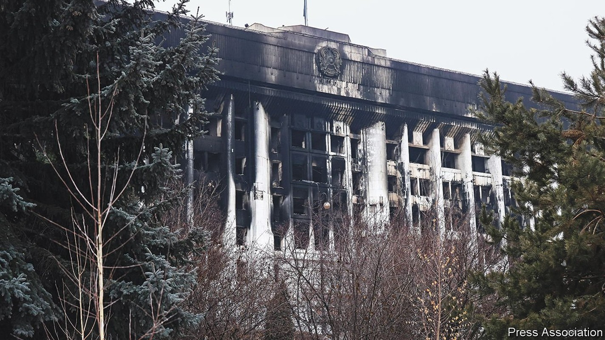
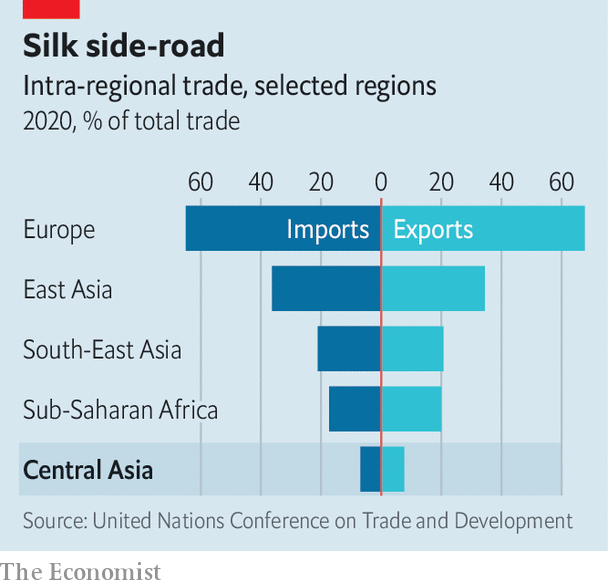
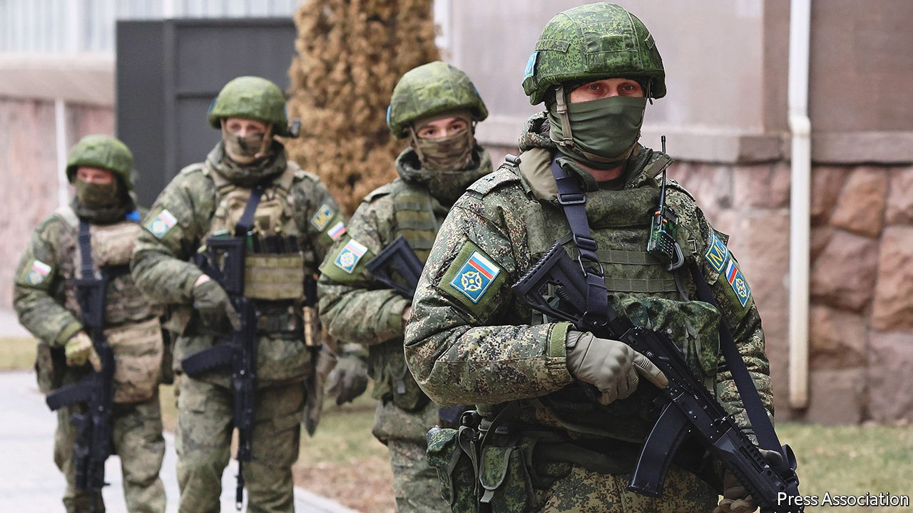
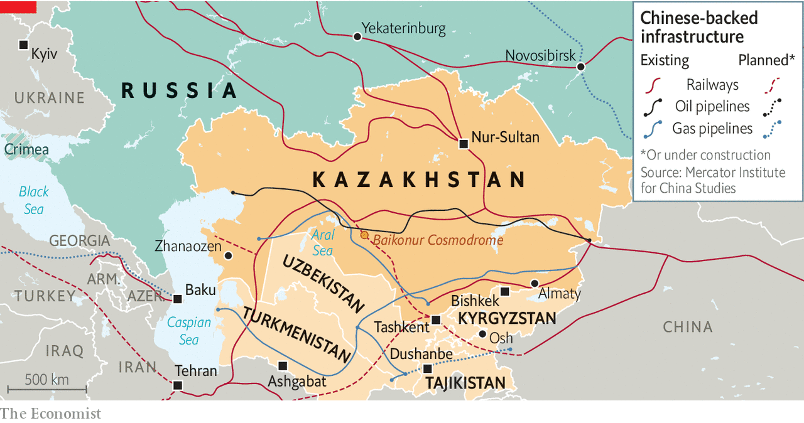

Kazakhstan’s bloody turbulence will affect all of Central Asia
Russian troops are no guarantee of stability

THE REVOLUTION, if that is what it was, was as brief as it was bloody, leaving at least 164 civilians, including children, and 16 police dead. Peaceful protests against a rise in fuel prices began early this month in Zhanaozen, a depressed town in Kazakhstan’s western oil region. Within days they had spread to neighbouring towns. Next, the spark raced eastward across the vast steppe to Almaty, Kazakhstan’s commercial hub, and even to the tightly policed capital, Nur-Sultan. Along the way cost-of-living grievances morphed into demands for political change. And then, suddenly, violence: a statue of Nursultan Nazarbayev, the 81-year-old “father” of the nation, after whom the capital is named, was pulled down. Almaty’s city hall (pictured) was torched. A mob stormed the airport.
Listen to this story.Enjoy more audio and podcasts on iOS or Android.
Listen to this story
Save time by listening to our audio articles as you multitask
With some of the security forces dead and his own position as Mr Nazarbayev’s hand-picked successor apparently at risk, President Kassym-Zhomart Tokayev went on the offensive. He declared a state of emergency and an “anti-terrorism” operation against “bandits” seeking to overthrow the state. He ordered the security forces to shoot troublemakers on sight. Most dramatically, he asked for help from the Russian-led Collective Security Treaty Organisation (CSTO), a military alliance of six post-Soviet states. Vladimir Putin, Russia’s president, lost no time dispatching paratroopers and armoured vehicles by air to guard crucial sites.
It seemed to turn a murky tide in Mr Tokayev’s favour. On January 11th the president delivered a speech whose emollience stood in stark contrast to his iron-fisted pronouncements of a few days earlier. He acknowledged economic grievances, criticised the wealth accumulated by a few well-connected families and even promised political changes in a system that has been run as a mostly oppositionless autocracy since Kazakhstan emerged as a state out of the ruins of the Soviet Union. As The Economist went to press, a phased withdrawal of Mr Putin’s troops had begun.
Mr Tokayev, pasty-faced and with tinted glasses, is a diplomat by training, an apparatchik’s apparatchik. Only a week ago he looked out of his depth, his future precarious. Now, he exudes composure, even confidence. In police cells around the country, some 10,000 face charges (and beatings) over the unrest, many of them probably innocent bystanders swept up in events. Within government the president has emerged with a firmer grip on power. He has sacked the prime minister, Askar Mamin, replacing him with a malleable technocrat, Alikhan Smailov. As for the powerful security chief, Karim Masimov, who like Mr Mamin (and indeed the president himself) is a Nazarbayev protégé, Mr Tokayev has not only sacked him but had him charged with treason. Animosity is said to have grown between the president and the security chief since it emerged last year that Mr Tokayev’s phone had been hacked.
Perhaps most dramatically of all to followers of Kazakhstan’s politics, Mr Nazarbayev’s influence in the state that he erected seems to have been severely curbed. He is gone from his position as chief-for-life of the all-powerful security council, from where he was assumed to be Mr Tokayev’s puppet-master. Now the puppet appears to have cut the strings. Neither Mr Nazarbayev nor his family, despite their still-prominent role in business and politics, have been seen since the unrest began.
So is that the end of the story? Almost certainly not. A welter of questions and contradictions emerge from the events and the official explanations of them.
That protests erupted in Zhanaozen is the least surprising turn of events. To a degree which Mr Tokayev only now acknowledges, the wealth from Kazakhstan’s vast reserves of oil, coal and metal ores, and the development that was expected to flow from them, has been spread unequally. That has bred resentment among oil-workers, as well as low-earners in the countryside and smaller cities. The greatest beneficiaries have been well-connected oligarchs. Just 162 people hold half of the country’s wealth, according to KPMG, an accounting firm. The oil industry has made several of Mr Nazarbayev’s relatives enormously rich.
The government explained the phasing out of subsidies for liquefied petroleum gas, used in many vehicles, as a market reform, but many Kazakhstanis saw it as a sop to oligarchs at the expense of their much poorer compatriots. Unwilling to risk a repeat of events in Zhanaozen a decade ago, when striking oil workers were gunned down by trigger-happy security goons, the government was quick to offer concessions, notably reintroducing the subsidies. But it also warned that the protests would not be allowed to continue.
The carrot-and-stick approach was straight from the authorities’ well-thumbed game plan. But events then departed from the script. Many in Kazakhstan find it odd that the protesters suddenly turned violent, seizing weapons from state arsenals and occupying the airport, instead of singing and chanting in squares. No one popped up to claim leadership of the demonstrations or to articulate demands. Perhaps the state’s systematic suppression over decades of all but a manufactured opposition goes some way to explain this. But it does not explain the attacks on strategic sites such as Almaty’s main telecoms tower and the airport, which suggest a co-ordinated movement seeking to challenge those in power. Nor does it explain the sudden vanishing of the security forces supposed to protect the airport. The violence does not seem to have stemmed from a mass, Western-backed “colour revolution”, whatever Mr Putin’s loud claims to the contrary.
The most plausible explanation is that popular, leaderless protests were hijacked by members of the elite with mafia thugs at their disposal, either to protect their economic interests or, more ambitiously still, to oust Mr Tokayev in favour of their own people. An incentive to move now, says Nargis Kassenova of Harvard University, is Mr Nazarbayev’s worsening health. He caught covid-19 in 2020, and looked visibly frailer when meeting Mr Putin in St Petersburg in December.
At any rate, Mr Tokayev’s allies privately blame relatives of Mr Nazarbayev for instigating the insurrection. The president himself has not publicly accused his predecessor or his family. Indeed, officials have denied rumours that one of the former president’s nephews, Samat Abish, the deputy head of intelligence, has been dismissed from his post or arrested like his boss. It may be that Mr Tokayev has struck some kind of deal with the Nazarbayevs, whereby the clan gets some kind of immunity in return for a promise for them all to step back, the old man included. The opacity and ambiguity of the current situation is one reason to think the saga is not over.
Other Central Asian governments are looking on appalled. Kazakhstan was long considered the strongest, most stable and most successful state in Central Asia. Yet the region’s five countries all face huge economic problems and share brittle regimes that respond to political challenges mainly with harshness.
These common features are a product of the region’s shared history. At the time of Russia’s imperial expansion in the second half of the 19th century, Central Asia was a congeries of clans and khanates. Many were proud of their descent from the armies of Genghis Khan and Tamerlane. Russian and subsequently Soviet rule brought development, but little in the way of nation-building. Indeed, though the Soviet Union theoretically divided the region into ethnically defined republics, in practice boundaries were quite arbitrary. It remains a jumble of ethnicities, including 500,000 descendants of Koreans forcibly deported from the Russian far east in the 1930s owing to suspected sympathies with Japan. Kazakhstan boasts a big Russian minority, of nearly 20% of the population, plus Koreans, Jews, Uzbeks, Dungans and more.
The raw, landlocked states that arose out of the Soviet Union’s wreckage inherited a great deal of Soviet baggage. This includes traditions of autocratic rule, environmental damage—the disappearance of the Aral Sea after water from the rivers that feed it was diverted for cotton-growing is only the most notorious instance—and state-dominated economies. Soviet habits die hard. Forced labour in Uzbekistan’s cotton fields ended only a couple of years ago. Only last year did Kazakhstan do away with over 200 categories of jobs from which women were barred, among them driving heavy-goods vehicles. The bans were supposedly to ensure “the protection of maternity and women’s reproductive health”—in effect, preserving women as good breeding machines.
Strongmen are the norm in Central Asia. Emomali Rahmon has ruled Tajikistan since 1994, when civil war raged in the newly independent republic. Kazakhstan, Uzbekistan and Turkmenistan are on only their second presidents since independence. Glossy-coated steeds feature prominently in the personality cult of Turkmenistan’s current ruler, Gurbanguly Berdymukhamedov, “The Protector”, just as they do in Kim Jong Un’s North Korea. Tiny Kyrgyzstan is the exception, a nominal democracy. But even there, power has only once passed smoothly from one president to the next after an election, rather than in mini-revolutions played out on the streets. What is more, the new president soon fell out with the old one, and had him arrested.
The region’s autocrats seek to justify cracking down on all opposition by talking about stability and growth. Yet, for all the glitzy new buildings in their capitals, rarely are the leaders as visionary as they claim. Economic models have not changed fast enough. Economies suffer from the resource curse. Kazakhstan depends on oil and gas, and is the world’s biggest producer of uranium. Although it has tried to diversify, it has been largely into energy-hungry fields: bitcoin-mining is a new fad. Turkmenistan has the world’s fourth-biggest reserves of natural gas. Cotton and gas dominate Uzbekistan’s economy. A single gold mine, just nationalised, accounts for a tenth of Kyrgyzstan’s GDP and is the biggest contributor to the government budget. As for Tajikistan, next door to Afghanistan’s poppy fields, it bears the hallmarks of a narco-state.
All across Central Asia, bribery and corruption are not incidental to the business model but intrinsic to it. A predatory state discourages investment. In Bishkek, the capital of Kyrgyzstan, a young IT entrepreneur bemoans how greedy customs officers demanded such high fees to allow imported servers into the country that his backer in Dubai gave up on his venture. Others turn to well-connected smuggling mafias. Some Nazarbayev family members are believed to have import-export rackets as well as control of the bazaars around Almaty. In Kyrgyzstan, Raimbek Matraimov, a former deputy customs chief, is a smuggling kingpin. In his southern base around Osh, he buys popularity by building mosques and hospitals. In Bishkek, politicians say, he buys governments.

Internal weaknesses spill into inter-ethnic conflicts. Bloody pogroms of ethnic Uzbeks took place in the southern Kyrgyz city of Osh in 2010. And they hold back cross-border co-operation. Central Asian countries trade less with one another as a share of total imports and exports than do the countries of sub-Saharan Africa (see chart). The region’s arbitrary borders spawn disputes over water-sharing or delineation of frontiers. Last year, to distract attention from problems at home, Tajikistan provoked a spat with Kyrgyzstan that left dozens of civilians dead.
Still, there are notable points of light. When Islam Karimov died in 2016, ending a brutal 27-year reign over Uzbekistan, his successor, Shavkat Mirziyoyev, admitted the dead-end into which Uzbekistan had been driven. He lifted restrictions on converting currency and streamlined customs procedures. He made it plain that apparatchiks were not to shake down local businesses. At the same time he closed the country’s most notorious prison, encouraged a degree of monitoring and criticism of the government, and abolished rules limiting where people could live or travel. The change, even in everyday interactions with Uzbekistanis, now largely freed from fear, is palpable to anyone who has not visited the country for a while. In government, the desire for advice from Western-led firms and multilateral institutions remains enthusiastic.
Yet deeper changes, including the privatisation of state banks and other businesses, and the reform of land, where the state squats, are proving trickier. The band of committed reformists in government is stretched thin. The obstacles come from oligarchs with entrenched interests; from below, where many bureaucrats with Karimov-era mindsets remain; and even from above, where, as across all of Central Asia, the imperious summons of the great man at any time of day or night means wasted hours in the presidential antechamber.
The obstacles to economic and especially political change across the region are one reason why Kazakhstan is being so closely watched. To senior modernisers in Uzbekistan, reform is already on a knife-edge. These people fear that events in Kazakhstan will lead neighbouring regimes, Uzbekistan’s included, to conclude that the risks of the state relaxing its grip are too great. In recent months, after all, Mr Tokayev had introduced what, by his regime’s standards, were serious changes. He had encouraged a degree of decentralisation, including by allowing a little political competition in local elections. He had released a few political prisoners and abolished the death penalty. Some see the recent violence as the result.
Russia’s return to Kazakhstan is another reason why the region is following events there closely. In truth, Russia never left. Russian operatives remain in Kazakhstan’s successor to the KGB. Russia controls a space-launch site, the Baikonur Cosmodrome. Through Mr Putin’s Eurasian Economic Union (which, among Central Asian states, also includes Kyrgyzstan), Russia in effect controls Kazakhstan’s customs policies. And the many ethnic Russians in the north of the country provide Mr Putin with an excuse to meddle.

From Russia with strings
To a lesser (Uzbekistan) or greater (Kyrgyzstan) extent, Russia enjoys similar influence across Central Asia. The influence is reinforced by the millions of Central Asians who have migrated to Russia in search of work. Their existence, says one Kyrgyz analyst, gives Mr Putin yet more leverage in Central Asia’s domestic politics when it suits him.
Sending in the troops will give him much more. It was only a couple of years ago that Central Asia’s five leaders met in Nur-Sultan, their first collective summit without Russia’s involvement. Now, Russia is propping up the government that hosted them. Tajikistan and Kyrgyzstan also contributed troops to the CSTO’s mission. That suggests that they, too, will more readily call in Russia if their regimes are threatened by internal foes.
Silk Road scrum

Others outside the region are also watching. China’s influence in Central Asia has grown markedly as it has built continent-girdling roads and railways intended to link China with Europe (see map). For all the protestations of Sino-Russian friendship, defined in part by a shared animosity towards the West, the speed of Russia’s deployment to Kazakhstan, which also underscored the demise of the Nazarbayev era, appears to have taken China by surprise. Its supportive rhetoric since suggests that China quickly concluded that its interests are best served by Russia’s intervention. Stability is all, and China is never averse to piggybacking commercially off others’ security.
Another country that thinks of itself as a former Silk Road power, Turkey, has been caught flat-footed. It harbours ambitions to lead the Turkic world, including Central Asia. The attraction of Turkey’s soft power is undeniable. Kazakh, Kyrgyz, Turkmen and Uzbek are all Turkic languages. Turkey is a Muslim country, but also a modern, relatively prosperous one. Culturally, the lights of Istanbul shine more brightly for many young Central Asians than do those of Moscow or Beijing. In Almaty and Tashkent many of the fashionable malls are Turkish-built. Yet now Turkish dreams bump up against a new Russian reality.
The West’s influence in Central Asia is also at stake. Perhaps to a surprising degree Western counsel has been welcome in Nur-Sultan, Bishkek and Tashkent. Mr Tokayev, who spent years in Geneva and is comfortable in the West, sought Western opinion before delivering his speech on January 11th, in which he was at pains to show his concern over joblessness, poor living standards, inflation and corruption. As he surely knows, the answer to the challenges facing Kazakhstan and the region is more modernisation, not less. Yet despite the promising talk, such modernisation is far from a given. ■